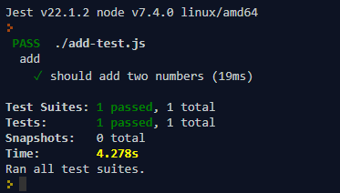

1.jest 测试javascript 函数
const add = require('./add');
describe('add', () => {
it('should add two numbers', () => {
expect(add(1, 2)).toBe(4);
});
});

性能监控
webpagetest
2.Enzyme 渲染测试 dom
1）.环境配置 Enzyme.config.js
import Enzyme from 'enzyme';
import Adapter from 'enzyme-adapter-react-16';
Enzyme.configure({ adapter: new Adapter(), });
export default Enzyme;
2). 使用 test.js
import {assert} from 'chai'
import React from 'react'
import Enzyme from './config/Enzyme.config';
import Example from '../src/example'
const {shallow}=Enzyme describe('Enzyme的浅渲染测试套件', function () {
it('Example组件中按钮的名字为text的值', function () {
const name='按钮名'
let app = shallow(<Example text={name} />) //模拟渲染 只渲染第一层，子组件不渲染
assert.equal(app.find('button').text(),name)
})
})
3. jsdom 测试生成的dom (为了避免Enzyme 的 shallow 函数渲染慢 所以使用jsdom 测试)
npm install --save-dev jsdom
1）.环境配置 setup.js
import jsdom from 'jsdom';
const { JSDOM } = jsdom;
if (typeof document === 'undefined') {
const dom=new JSDOM('<!doctype html><html><head></head><body></body></html>');
global.window =dom.window;
global.document = global.window.document;
global.navigator = global.window.navigator;
}
2).实例代码 test1.js
import {assert} from 'chai'
import React from 'react'
import Enzyme from 'enzyme'
import Adapter from 'enzyme-adapter-react-16'
import Example from '../src/example'
const {shallow,mount}=Enzyme
Enzyme.configure({ adapter: new Adapter() })
describe('Enzyme mount的DOM渲染（Full DOM Rendering）中', function () {
it('Example组件中按钮的名字为子组件Sub中span的值', function () {
const name='按钮名' let app = mount(<Example text={name} />)
const buttonObj=app.find('button')
const spanObj=app.find('span')
console.info(`查找到button的个数：${buttonObj.length}`)
console.info(`查找到span的个数：${spanObj.length}`)
assert.equal(buttonObj.text(),spanObj.text())
})
})
运行 npm test 不是 npm run test